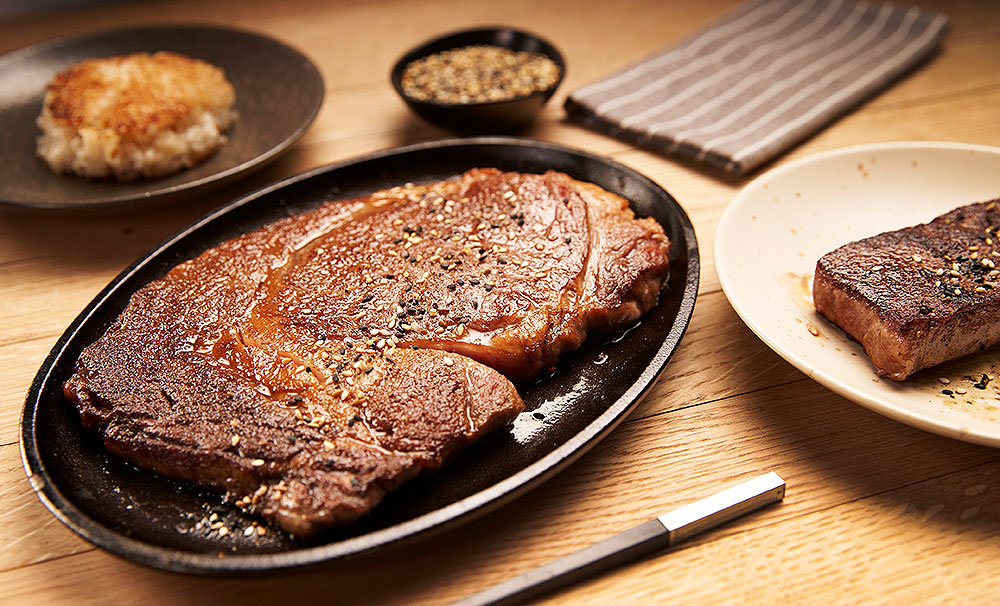

Wagyu recipe

Juicy A5 wagyu steak served on a plate
Cooking up this steak is very simple and should take about 10-15 minutes to prepare.
The ingredients and cooking instructions can be found below.
Ingredients
- 1x Japanese A5 wagyu New York strip, 5-6 ounces
- 2x Japanese A5 wagyu loin steaks, 4-5 ounces
- Salt and pepper
Cooking Instructions
- Season steaks on both sides
- Grill for 3-4 minutes until crust develops
- Let sit for 1-2 minutes
- Slice and Serve
Acknowledgement
Click here to find out more about this recipe.
Back to home